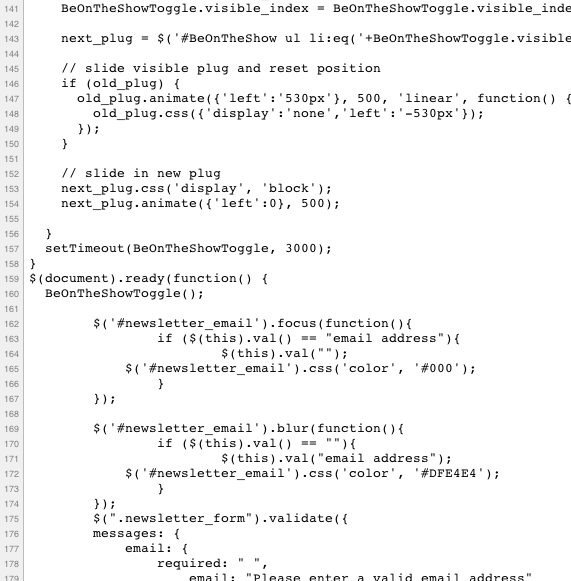

Unit Testing
Single Page Applications
By @johnkpaul
johnkpaul.com/html5devs
github.com/johnkpaul/twitter-show-more-example
Unit Testing
Domenic did an amazing job. I bet he convinced you all.
- I'm was tired of manually refreshing and manually debugging everything
- I was tired of not knowing when I've broken something
- I was tired of using my app to find all the edge cases
Imperative code is so easy
function add(){
var sum = 0;
for(var i = 0;i<arguments.length;i++){
sum += arguments[i];
}
return sum;
}
equal(10, add(1, 2, 3, 4), "sum should be 10");
equal(100, add(50, 50), "sum should be 100");
Refactoring is awesome
function add(){
return Array.prototype.slice.call(arguments)
.reduce(function(prev, current){
return prev + current;
});
}
equal(10, add(1, 2, 3, 4), "sum should be 10");
equal(100, add(50, 50), "sum should be 100");
Imagine if you wanted to unit test
But our code doesn't look like that.
Our lives are so much easier with client side MV*
We have modularity
We have "classes"
What exactly is a unit?
- On the client, it's a little blurry
- How do we deal with units of code with dependencies?
- is a template separately testable?
- minimize, but if necessary, integrate some pieces
Test imperative, then test events
(in Backbone, test M and then test V)
- models and collections are fairly imperative
- views are often tightly integrated with templates
Quick App Demo
QUnit test

Collection's fetch method

QUnit alternatives
- Jasmine - BDD
- Chai - TDD/BDD
- BusterJS
- JSTestDriver